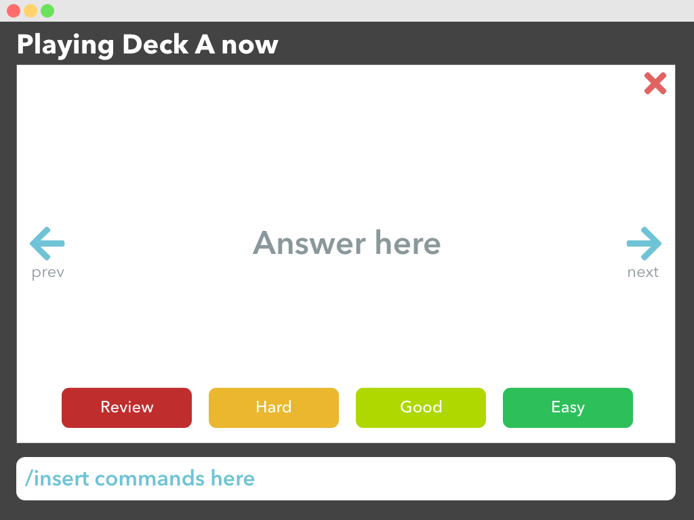

By: Team SE-EDU Since: Jun 2016 Licence: MIT
- 1. Introduction
- 2. Quick Start
- 3. Features
- 3.1. Viewing help :
help - 3.2. Lists all decks (or all cards) :
list - 3.3. Adding a deck:
newdeck - 3.4. Navigating into a deck :
cd - 3.5. Navigating out of the current deck :
cd - 3.6. Editing a deck :
editdeck - 3.7. Deleting a deck :
deldeck - 3.8. Adding a card :
newcard - 3.9. Editing a deck :
editdeck - 3.10. Sort current list by name :
sortname - 3.11. Sort by rank :
sortrank - 3.12. Export deck to csv file :
exportdeck - 3.13. Import deck from csv file :
importdeck - 3.14. Sort by rank :
sortrank - 3.15. Card difficulty classification :
classify - 3.16. Exiting Anakin :
exit
- 3.1. Viewing help :
- 4. FAQ
- 5. Command Summary
1. Introduction
Anakin is for those who want to make heavy use of flashcards without the hassle of managing physical copies. More importantly, Anakin is optimized for those who prefer to work with a Command Line Interface (CLI) while still having the benefits of a Graphical User Interface (GUI). Interested? Jump to the Section 2, “Quick Start” to get started. Enjoy!
2. Quick Start
-
Ensure you have Java version
9or later installed in your Computer. -
Download the latest
addressbook.jarhere. -
Copy the file to the folder you want to use as the home folder for your Address Book.
-
Double-click the file to start the app. The GUI should appear in a few seconds.
 -
Type the command in the command box and press Enter to execute it.
e.g. typinghelpand pressing Enter will open the help window. -
Some example commands you can try:
-
list: lists all decks -
newdeck: creates a new deck. -
delete3: deletes the 3rd contact shown in the current list -
exit: exits the app
-
-
Refer to Section 3, “Features” for details of each command.
3. Features
Command Format
-
Words in
UPPER_CASEare the parameters to be supplied by the user e.g. inadd n/NAME,NAMEis a parameter which can be used asadd n/John Doe. -
Items in square brackets are optional e.g
n/NAME [t/TAG]can be used asn/John Doe t/friendor asn/John Doe. -
Items with
… after them can be used multiple times including zero times e.g.[t/TAG]…can be used ast/friend,t/friend t/familyetc. -
Parameters can be in any order e.g. if the command specifies
n/NAME p/PHONE_NUMBER,p/PHONE_NUMBER n/NAMEis also acceptable.
3.1. Viewing help : help
Lists all available commands and their respective formats.
Format: help
3.2. Lists all decks (or all cards) : list
Displays a list of all available decks or displays all cards if the command is typed inside a deck.
Format: list
3.3. Adding a deck: newdeck
Adds a person to the address book
Format: newdeck [n/name]
Examples:
* newdeck n/My First Deck
3.4. Navigating into a deck : cd
Enters the deck identified by the index number used in the displayed deck list.
Format: cd INDEX_OF_DECK
Examples:
* list
select 2
Enter the 2nd deck in the deck list
3.5. Navigating out of the current deck : cd
Exits the current deck and returns the user to the list of decks.
Format: cd ..
3.6. Editing a deck : editdeck
Edits the name of the deck at the specified index in the list.
Format: edit INDEX_OF_DECK n/NAME
Examples:
-
edit 1 n/My Deck
Edits the name of the first deck in the list to beMy Deck.
3.7. Deleting a deck : deldeck
Deletes the specified person from the address book.
Format: deldeck INDEX_OF_DECK
Examples:
-
list
deldeck 2
Deletes the 2nd deck that appears in the list.
3.8. Adding a card : newcard
Edits an existing card in the specified deck.
Format: newcard d/INDEX_OF_DECK [q/QUESTION] [a/ANSWER]
If user is inside a deck, can omit: d/INDEX_OF_DECK.
Format: newcard [q/QUESTION] [a/ANSWER]
3.9. Editing a deck : editdeck
Edits an existing card in the specified deck.
Format: editcard d/INDEX_OF_DECK INDEX_OF_CARD [q/QUESTION] [a/ANSWER]
If user is inside a deck, can omit: d/INDEX_OF_DECK.
Format: editcard INDEX_OF_CARD [q/QUESTION] [a/ANSWER]
Examples:
* list
Displays all decks.
* edit 1 n/My Deck
Edits the name of the first deck in the list to be My Deck.
3.10. Sort current list by name : sortname
If user is currently in a deck, sort all card in alphabetical order.
Format: sortname
3.11. Sort by rank : sortrank
Sorts the cards in current deck by rank (card performance).
Format: sortrank
3.12. Export deck to csv file : exportdeck
Creates a CSV file at the specified FILEPATH containing the deck at INDEX_OF_DECK.
Format: exportdeck INDEX_OF_DECK [f/FILEPATH]
3.13. Import deck from csv file : importdeck
Imports a deck from the CSV at the specified FILEPATH.
Format: exportdeck FILEPATH
3.14. Sort by rank : sortrank
Sorts the cards in current deck by rank (card performance).
Format: sortrank
3.15. Card difficulty classification : classify
Allocates card into one of four bins {Easy, Good, Hard, Review}
Format: classify d/INDEX_OF_DECK INDEX_OF_CARD <classification>
If user is inside a deck:
Format: classify INDEX_OF_CARD <classification>
If user is viewing a card:
Format: classify <classification>
3.16. Exiting Anakin : exit
Exits the program.
Format: exit
4. FAQ
Q: How do I transfer my data to another Computer?
A: Export all your decks, copy the .csv files to the other Computer, then use the import command to import your decks.
5. Command Summary
-
See above please :)